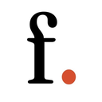
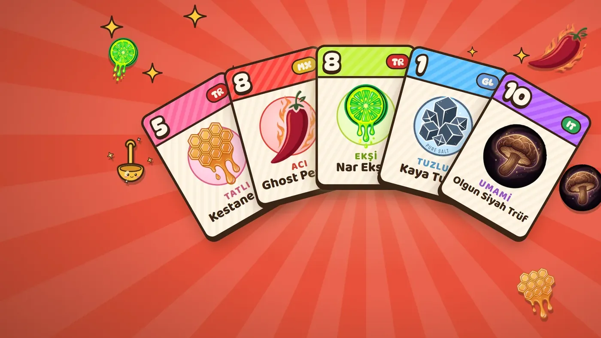
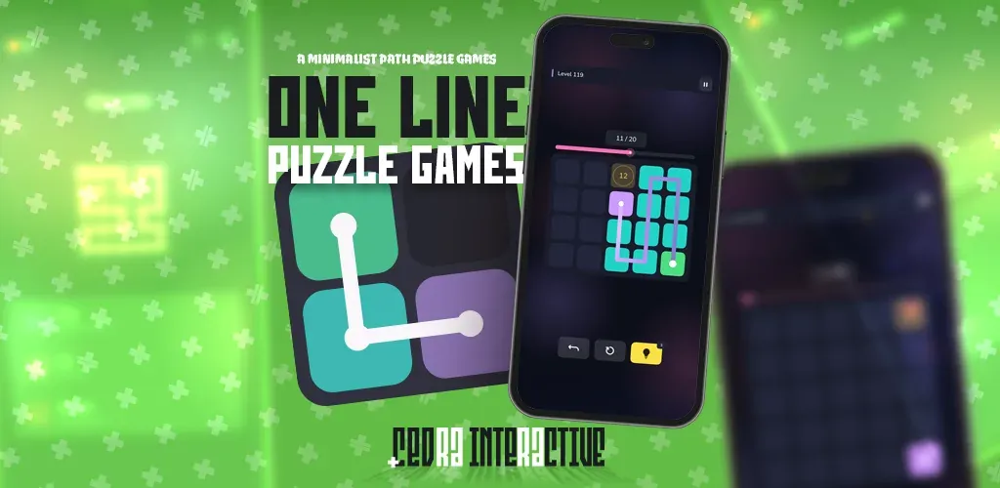
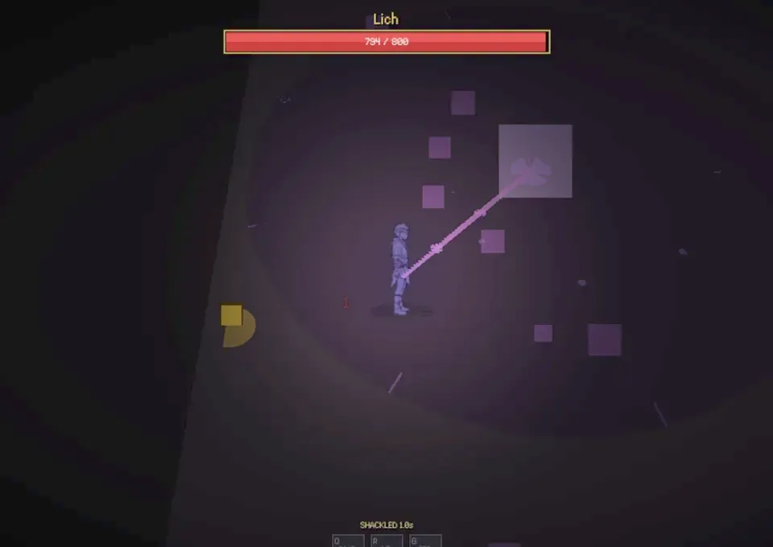
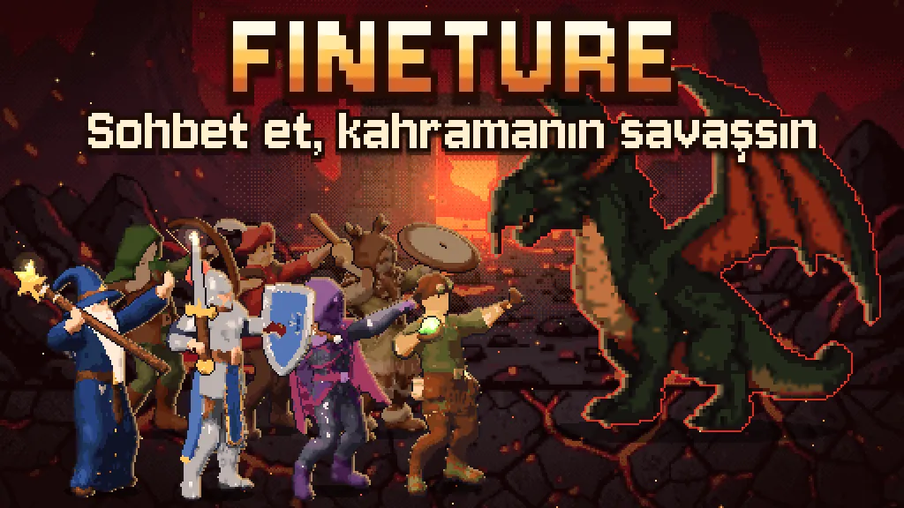

SEZER UZUN
- Video oyunu sektöründe:
- Game Director / Creative Director
- Yazılım sektöründe:
- Full-Stack Dev
- Çeviri sektöründe:
- Makine Çeviri Kurucusu
Oyun yapıyorum, oyunları Türkçeye taşıyorum ve hepsinin üstünde koştuğu araçları kendim yazıyorum.
- Makine Çeviri topluluğu
- 68bin
- CEDRA oyunu
- 4
- Stüdyoda proje & araç
- 20+
- Çeviride ilk yıl
- 2019

Finetion 2026 → Canlı Yazılım stüdyosu: web uygulamaları, SaaS ürünleri, mobil ve masaüstü yazılımlar; bulut altyapısını kurup çalışır hâlde tutuyoruz.
01YapımdaRoguelike · Deste kurma GASTRO Yemek pişirme üzerine, malzeme kartlarıyla oynanan bir roguelike deckbuilder.
02YayındaMinimalist · Bulmaca One Line Tek çizgi, her kare. Her kareye bir kez uğrayarak çözülen minimalist bir yol bulmacası.
03YapımdaZindan · Yukarıdan bakış Gunshot Yukarıdan bakışlı bir zindan oyunu; kendi yazdığımız motorda.
04CanlıPixel RPG · Discord Fineture Discord içinde oynanan bir pixel RPG. Sohbet et, kahramanın savaşsın. Bağımsız oyun stüdyosucedrainteractive.com ↗Çeviri kelime değiştirmek değil, haritayı yeniden çizmektir. İngilizce kelimeleri yan yana dizer; Türkçe yerlerini değiştirir, eklerle tek kelimede toplar.
01 / 04
Welcome to my world.
Dünyamadünya·m·aworld·my·to hoşhoşpleasant geldin.gel·di·ncome·PST·you
We translate games into Turkish.
Oyunlarıoyun·lar·ıgame·PL·ACC Türkçeyetürkçe·yeTurkish·into çeviriyoruz.çevir·iyor·uztranslate·PROG·we
We couldn’t play it in our own language.
Kendikendiown dilimizdedil·imiz·delanguage·our·in oynayamıyorduk.oyna·ya·mı·yor·du·kplay·can·not·PROG·PST·we
Goodbye, World!
Elveda,elvedafarewell Dünya!dünyaworld
Makine Çeviri bu haritayı oyunlar için çiziyor: ücretsiz Türkçe yamalar ve hepsini bir arada sunan Makine Launcher. 2019’dan beri büyüyen topluluk bugün 68 bin üye.
makineceviri.org